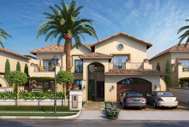
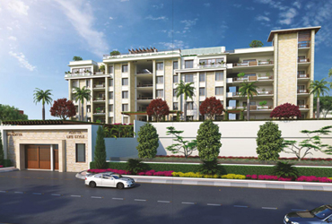
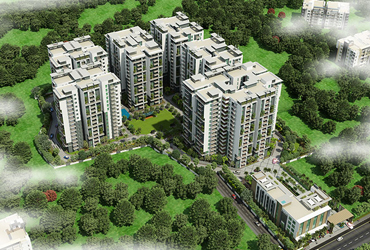
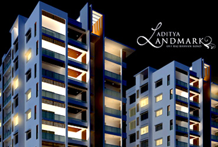
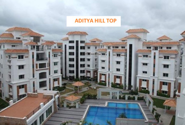

WELCOME TO SRI ADITYA Sri Aditya Homes was founded in 1991 by Mr. V. Kota Reddy. Under his able leadership and with a predilection for innovative designs, latest technology, uncompromising quality and professional commitment, we endeavor to deliver stunning projects for our clients. Premium locations, zeal for aesthetics and luxuriant designs are what sets us apart from others and inspires us to compete with ourselves to deliver the next best project. When customers find their dream homes within our projects, it is a true measure of success for us. OUR VISION Sri Aditya Homes We aim to delight our legions of loyal customers with extraordinary lifestyles that raise the benchmark for luxury living. Each of our projects are located in the most premium well connected locales and designed to tune out the din and bustle of the city, in other words, a perfect fusion of luxury and serenity. Green environs, captivating views and designer landscapes are all in compliance with our belief - ‘City outside, serenity inside Everything about Aditya Palm Grove works to perfection. Built as a premium plotted development, the layout is lined with trees, shaded avenues, gardens and parks. From cabling to security, infrastructure at every level is silken smooth. The layout is detailed to precision as you indulge in the joys of world class amenities that impress children to senior citizens. When it comes to outdoors, the whole community is one family in this layout. Abundance of nature. Well orchestrated infrastructure with profuse amenities. Luxe features. Great neighborhood. And most importantly, one of the honest promoters in the industry. Put them all together and you have Aditya Palm Grove. The Open Plots Project of 4.7 acres is located at the heart of several exclusive resident…
    Sri Aditya
info@adityahomes.com
040 2355 8673
© 2023SAI